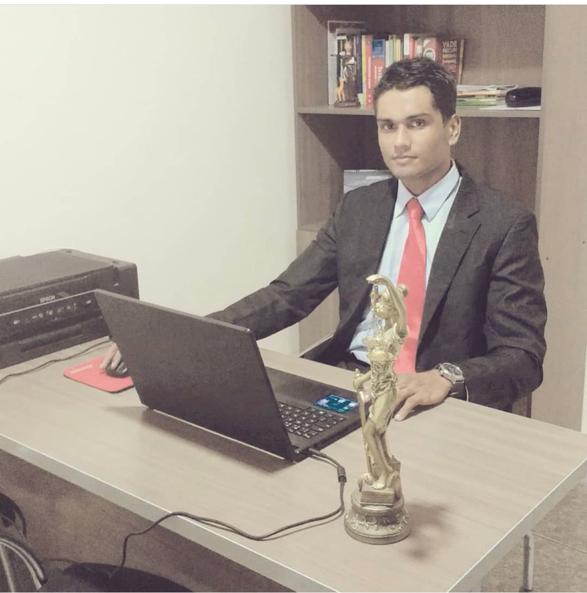

Joelmo Vasconcelos da Silva
OAB/CE 38.137
FORMAÇÃO ACADÊMICA
- Bacharel em Direito UNIGRAND - Fortaleza-CE, 2017
- Especialização: Direito Previdenciário - UNIFOR, Fortaleza-CE, 2022
- Especialização: Direito Processual Cível e Processo de Execução Faculdade Única de Ipatinga - Minas Gerais, 2019
- Especialização: Direito do Trabalho Individual e Coletivo Faculdade Única de Ipatinga - Minas Gerais, 2019
HISTÓRICO PROFISSIONAL
- Representação de clientes perante tribunais em debate oral, construindo narrativas favoráveis e honestas em torno das provas e fatos apresentados.
- Elaboração de renúncias ao exercício do direito, recursos e petições corretos e minuciosos em nome dos clientes.
- Consulta a juízes e advogados de partes oponentes para discutir e resolver litígios, defendendo os resultados mais favoráveis aos clientes.
- Explicação sobre o processo jurídico a cada cliente, respondendo a perguntas para reduzir preocupações.
- Preparo de documentos, articulando os objetivos dos clientes dentro dos limites das leis aplicáveis.
- Desenvolvimento de estratégias litigiosas detalhadas para cada caso.
- Pesquisa de autoridade legal e de princípios fundamentais do direito para comparar padrões de fatos com casos precedentes e determinar prováveis resultados.